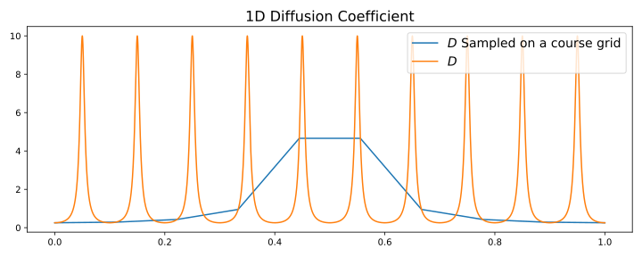
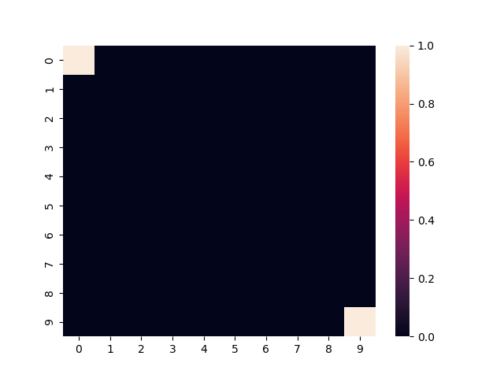

Fv
Table of Contents
1. Standard Diffusion equation
\begin{align*}
\nabla \cdot (D(x) \nabla c) &= f(x) & \text{in}& \, \Omega \\
c(x) &= 0 & \text{on}& \, \partial \Omega
\end{align*}
2. Finite Volume
Integral Form
\begin{align*} \int_{Q} \nabla \cdot (D(x) \nabla c ) &= \int_{Q} f(x) \, \mathrm{d}x \\ \int_{\partial Q} D(x) \nabla c \cdot \vec{n} \mathrm{d}S \, &= \int_{Q} f(x) \, \mathrm{d} x \end{align*}We assume constant c on \(Q\) \(q =D(x) \nabla c\) is not uniquely defined on \(\partial\Omega\) since we assuse c constant and therefore discontinous on \(\partial Q\). We therefore introduce a Numerical Flux \(q = g(c^+ , c^{-} )\) for example upwind
\begin{align*} g(c^+ , c^-) = - D(x^{\frac{1}{2} +}) \frac{c^+ - c^-}{h} \end{align*} \begin{align*} g(c^+ , c^-) &= T_{\pm } * \left( c^+ - c^- \right) \\ T_{\pm } &= - D(x^{\frac{1}{2}+}) \frac{1}{h} \end{align*}With \(D(x) = \frac{1}{2+ 1.9 \cos \left( \frac{2 \pi x}{\epsilon} \right)}\) Linear System
\begin{align*} \int_{\partial Q_{i}} D(x_{i}) \nabla c \cdot \vec{n} \, \mathrm{d}S &= |Q| \overline{f}(x_{i}) \\ \sum_{j \in \left\{ -1,1 \right\} } j * g(c_{i+j+1} , c_{i+j}) &= h \overline{f}(x_{i}) \end{align*}import numpy as np import scipy as sp import matplotlib.pyplot as plt epsilon = 0.1 #* np.pi N = 10 n = 100 h = 1/(N-1) D = lambda x: 1 / (2+1.9 * np.cos(2 * np.pi* x / epsilon)) x = np.linspace(0,1 ,N) x_highres = np.linspace(0,1 , 100000) c = np.zeros(N) source = np.ones(N) * h # Boundary source[0] = 0 source[-1] = 0 plt.plot(x , D(x)) plt.plot(x_highres , D(x_highres)) plt.legend([r"$D$ Sampled on the course grid" , r"$D$"]) plt.title("Diffusion Coefficient")

Matrix Assembly
from scipy.sparse import spdiags import seaborn as sns def assemble_matrix(N ,x, h ): diagp1 = np.zeros(N) diagp1[2:] = np.ones(N-2) * -1/h * D(x[1:-1] + 0.5*h) diagm1 = np.zeros(N) diagm1[:-2] = np.ones(N-2) * -1/h * D(x[1:-1] - 0.5*h) diag0 = np.ones(N) diag0[1:-1] *= 1/h * (D(x[1:-1]-0.5*h) + D(x[1:-1] + 0.5*h)) A = spdiags([diagm1 , diag0 , diagp1] , np.array( [-1, 0, 1] )) return A A = assemble_matrix(N , x , h) #plt.spy(A) sns.heatmap(A.todense()) plt.title("Sparsity Patter of A")

c = sp.sparse.linalg.spsolve(A.tocsr(),source) plt.plot(c) plt.title("Course Grid Solution")
3. Multiscale
In 1D
\begin{align*} T_{\pm } &= \int_{Q} D(x) \phi'_{\pm} (x)\, \mathrm{d}x \end{align*}calculate c integral
np.sum((c[1:] - c[:-1])/h * -D(x[1:]))
-1.7465436574208233
from scipy.sparse.linalg import spsolve micro_basis = np.zeros(N*n) T = np.zeros(N) for i,x_m in enumerate(x): xm = np.linspace(x_m , x_m + h , n) hm = h/(n-1) A_m = assemble_matrix(n, xm , hm ) fm = np.ones(n) * hm fm[0] = 0 fm[-1] = 1 phi = spsolve(A_m.tocsr(),fm) micro_basis[n * i:n*(i+1)] = phi T[i] = hm * np.sum(((phi[1:] - phi[:-1])/hm)**2 * D(xm[:-1])) plt.plot(x,T) plt.xlabel(r"$x$") plt.ylabel(r"$T(x)$") plt.title(r"Multiscale Transmission Coeficcients $T$")
diagp1 = np.zeros(N) diagp1[2:] = np.ones(N-2) * -1* T[1:-1] diagm1 = np.zeros(N) diagm1[:-2] = np.ones(N-2) * -1* T[:-2] diag0 = np.ones(N) diag0[1:-1] *= (T[1:-1] + T[:-2]) A_macro = spdiags([diagm1 , diag0 , diagp1] , np.array( [-1, 0, 1] )) sns.heatmap(A_macro.todense())

N_fine = n*N x_fine = np.linspace(0,1 , n*N) h_fine = 1/(N*n -1) A_fine = assemble_matrix(N_fine , x_fine , h_fine) f_fine = np.ones(N*n) * h_fine f_fine[0] = 0 f_fine[-1] = 0 c_fine = sp.sparse.linalg.spsolve(A_fine.tocsr(),f_fine)

c_macro = sp.sparse.linalg.spsolve(A_macro.tocsr(),source) c_multi = np.zeros((N-1)* n) x = np.linspace(0,1,N) x_multi = np.linspace(0,1 , n*(N-1)) for i in range(len(c_macro)-1): t = micro_basis[n*i:n*(i+1)] c_multi[n*i:n*(i+1)] = (1-t) * c_macro[i] + t * c_macro[i+1] plt.plot(x,c) plt.plot(x,c_macro) plt.plot(x_multi,c_multi) plt.plot(x_fine , c_fine) plt.title("Comparison Of Different Solvers") plt.xlabel(r"$x$") plt.ylabel(r"$c(x)$") plt.legend(["macro" , "multiscale", "multi_fine" , "reference"])